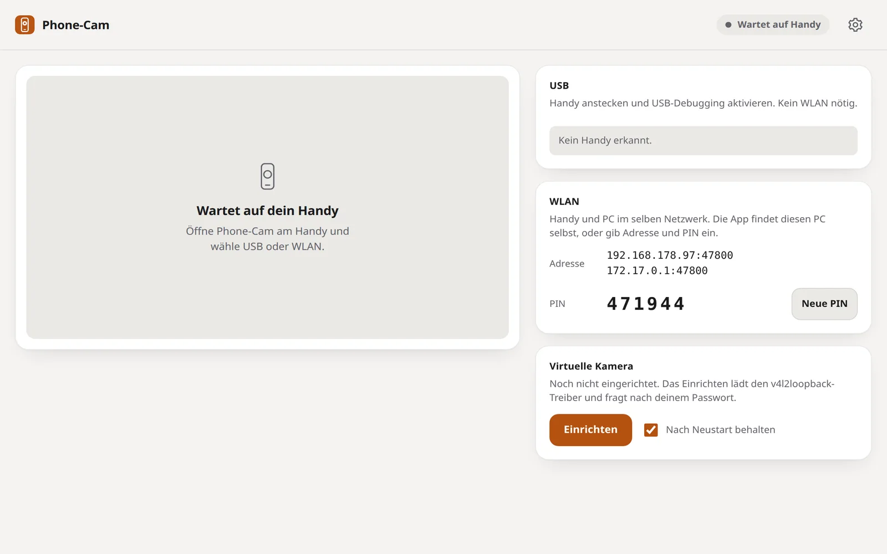
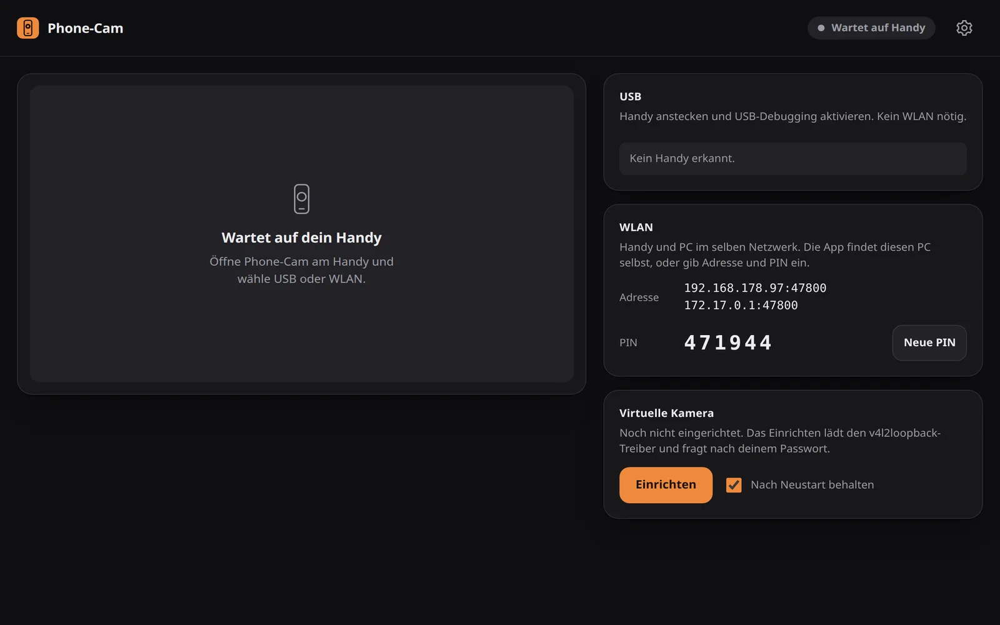
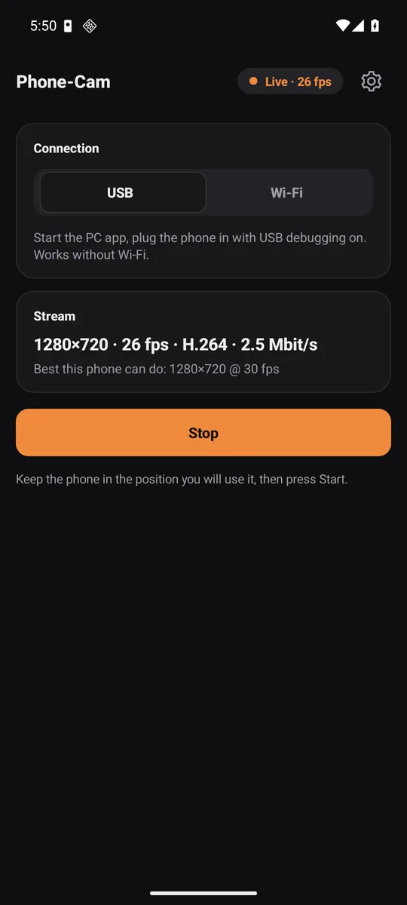

Für Linux und Android. Windows: Stream ohne Kameratreiber
Dein Handy. Deine Webcam.
Phone-Cam macht aus dem Handy eine echte Kamera am PC. Per USB-Kabel, WLAN oder beidem gleichzeitig, verschlüsselt, bis 4K mit 60 Bildern pro Sekunde, wenn das Handy es kann.
Kostenlos, ohne Konto, Open Source.


Zwei kleine Apps, ein Weg
Am PC läuft eine einzelne Datei von rund 700 KB, kein Electron. Am Handy eine native App unter 200 KB.

Was du bekommst.
USB, WLAN oder beides
4K bei 60 fps, wenn es geht
Eine echte Kamera am PC
Ruhig und klein
Verschlüsselt, ohne Cloud
So geht es los
sudo modprobe v4l2loopback exclusive_caps=1 card_label=Phone-Cam video_nr=42